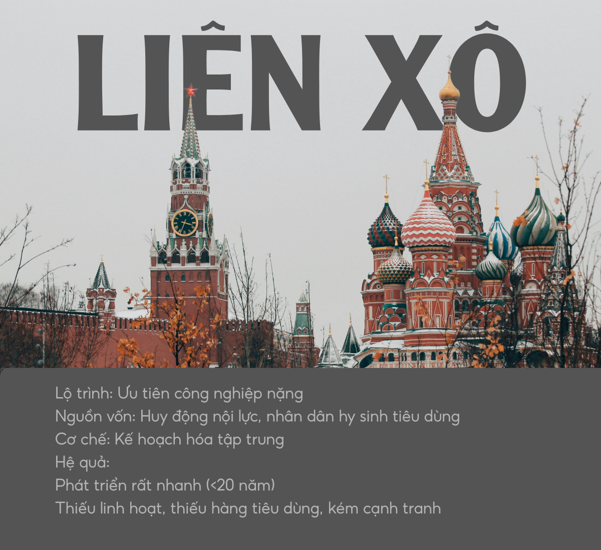
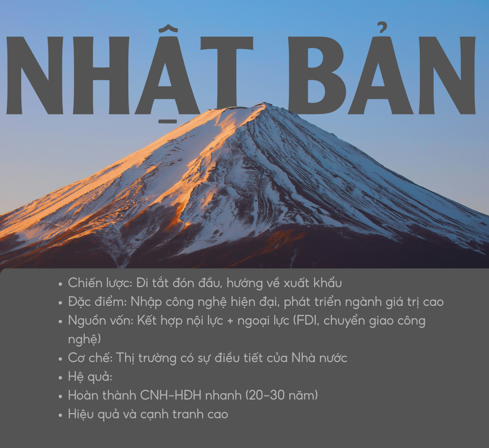

Khái quát về cách mạng công nghiệp
Các cột mốc của CMCN
CMCN 1.0
Giữa thế kỷ XVIII - giữa TK XIX: Cơ khí hóa với máy hơi nước.
CMCN 2.0
Nửa cuối TK XIX - đầu TK XX: Điện khí hóa và dây chuyền sản xuất hàng loạt.
CMCN 3.0
Thập niên 70 TK XX: Tự động hóa với máy tính và Internet.
CMCN 4.0
Hiện nay: Sự kết hợp của 3 thế giới: Vật lý - Số hóa - Sinh học.
Vai trò cụ thể của CMCN
CÁCH MẠNG CÔNG NGHIỆP
→ Phân công lao động xã hội + năng suất lao động tăng
→ Lợi nhuận và nguồn thu thuế tăng
→ Tái đầu tư vào công nghệ, hạ tầng, dịch vụ xã hội
→ Thúc đẩy phát triển đất nước
→ Lợi nhuận và nguồn thu thuế tăng
→ Tái đầu tư vào công nghệ, hạ tầng, dịch vụ xã hội
→ Thúc đẩy phát triển đất nước
Công nghiệp hóa và các mô hình công nghiệp hóa trên thế giới
Công nghiệp hóa là quá trình chuyển đổi nền sản xuất xã hội từ lao động thủ công sang lao động bằng máy móc. Các mô hình tiêu biểu bao gồm:

Công nghiệp hóa cổ điển: Nước Anh

Công nghiệp hóa kiểu Liên Xô cũ

Nhật Bản và các nước công nghiệp mới (NICs)
Tính tất yếu khách quan và nội dung của công nghiệp hóa hiện đại hóa ở Việt Nam
Dưới đây là một Podcast được tạo bởi AI nói về chủ đề này